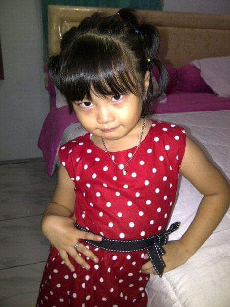
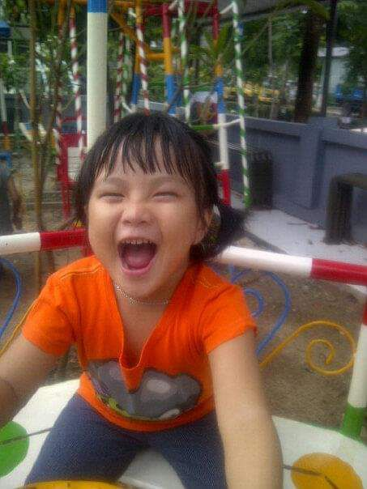
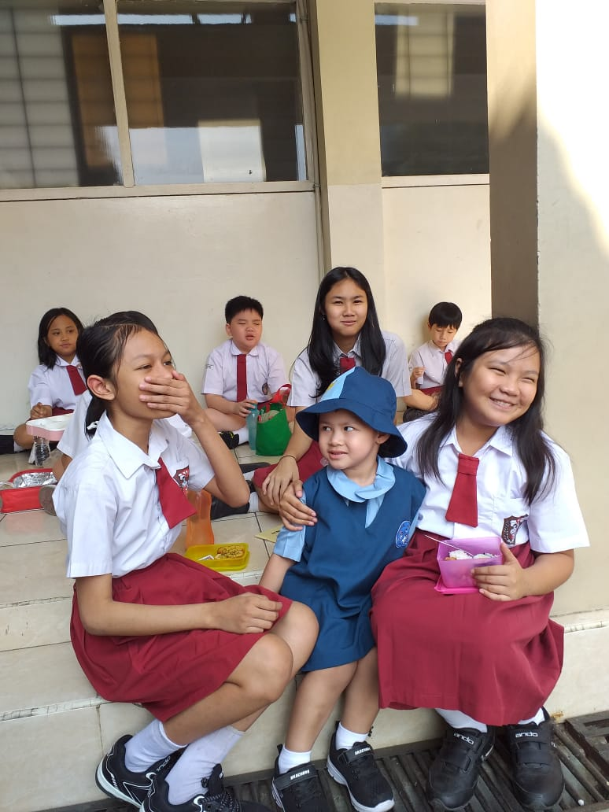
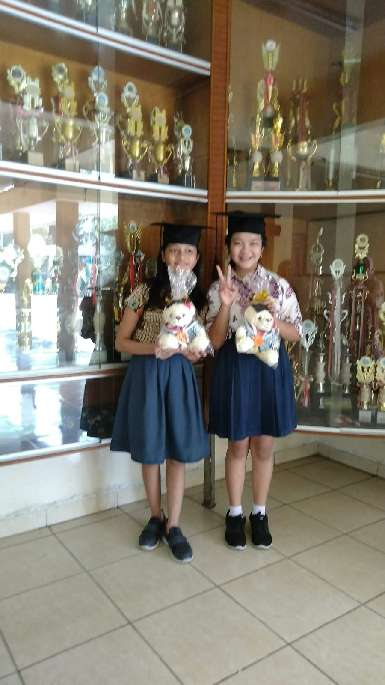
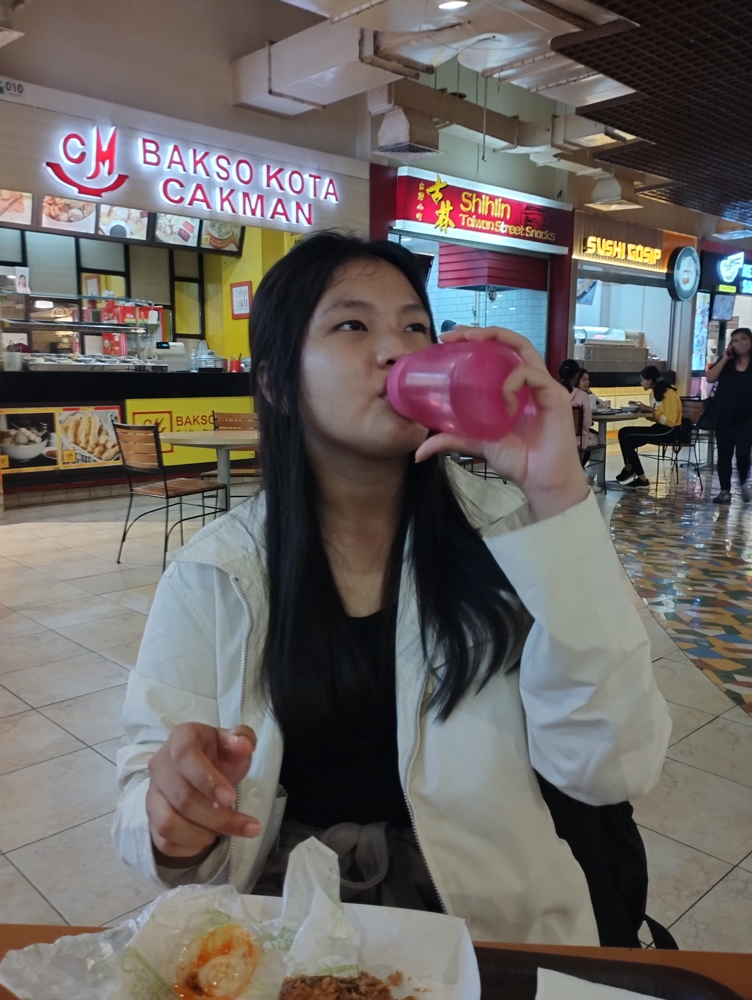
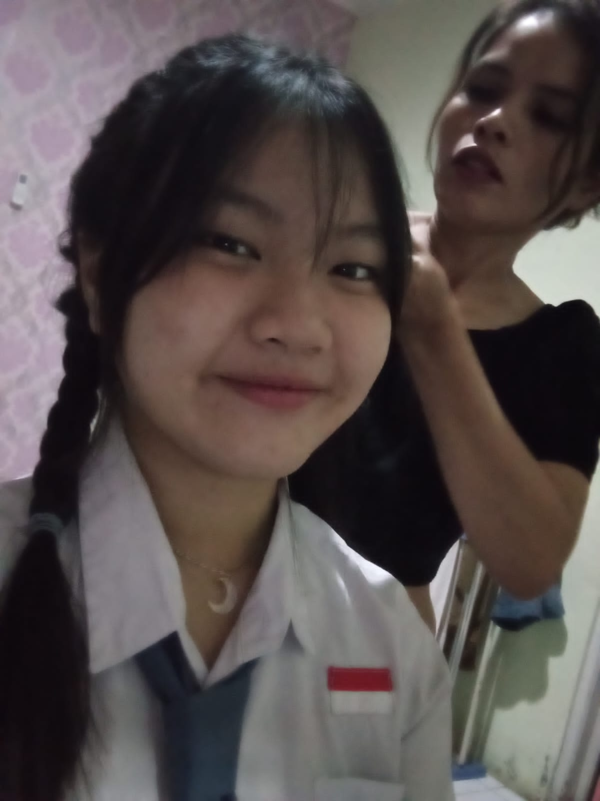

Your Life Road
This is your life path, starting from when you was just a kid until now, as a student college who also do a content as her side job. We never know how our life's gonna be.

This is you when you're just a babyy. Bocil lu pasti ngga nyangka sama lu yang sekarang dengan segala perjuangan yang lu lalui selama lu hidup ini. Kalau lu bisa punya kesempatan buat ngobrol sama diri lu yang versi kecil, pasti dia excited dan ikut bangga.

Masa SD adalah masa di mana segala macam drama ada. Gw inget dulu gw pernah disuruh Ms. Soraya buat "ngajarin" lu pas dikasih soal bahasa Inggris. Dilanjut dengan masa di mana kita les pelajaran tambahan di tempat Bu Ida demi mengejar nilai yang "bagus" supaya bisa masuk SMP Negeri.


Masuk ke fase SMP yang lu berujung masuk swasta (karena takdir berkata lain). Selama PJJ sampai akhirnya tatap muka kembali, lu mulai perlahan mengambil kesempatan apa pun itu demi bisa dapet SMA Negeri. Ekskul vokal? Jadi dirigen? Masuk organisasi? Ada lomba pun juga lu babat wkwk.

Atas izin Allah, lu pun diterima di SMA Negeri. Lu perlahan mulai ngebangun rasa percaya diri, public speaking, bersosialisasi dengan banyak teman, dan masih banyak lagi. Lu juga secara berkala glow-up parah (Maa Syaa Allah).

Meski ngga masuk PTN, Allah prepared a better opportunities for you. Selama libur sebelum masuk kuliah, lu mencoba mencari kegiatan baru sebagai pengalaman baru, which is as a (beauty) muse. And guess what? You had changed a LOTTT ever since. So many bigger opportunities came to you. You shine so much and it creates you.
Sampai akhirnya sekarang udah kuliah, you still shine as bright as a diamond. No matter how much things you had sacrificed or how much mistakes you made or how much issues you had faced that pained you, in the end, you did very amazing. Keep up the good work. I hope your future will always bright and lovely and happily ever after.